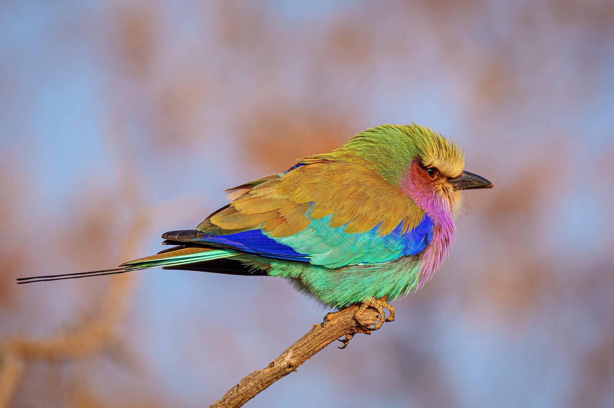

Aves
Rolinha-de-asa-azul
Turtur afer
LC
Pouco Preocupante · IUCN
Taxonomia
Reino
Animalia
Filo
Chordata
Classe
Aves
Ordem
Columbiformes
Família
Columbidae
Género
Turtur
Estado de conservação
Avaliação global (IUCN): LC — Pouco Preocupante.
Informação de referência; o inventário local do Jardim Botânico EGFB continua em actualização.
Distribuição
África subsaariana; bordas de floresta e savana arborizada.
Ecologia
Granívora; forrageia no solo à sombra.
Biologia
Ninho simples em arbustos ou árvores baixas.